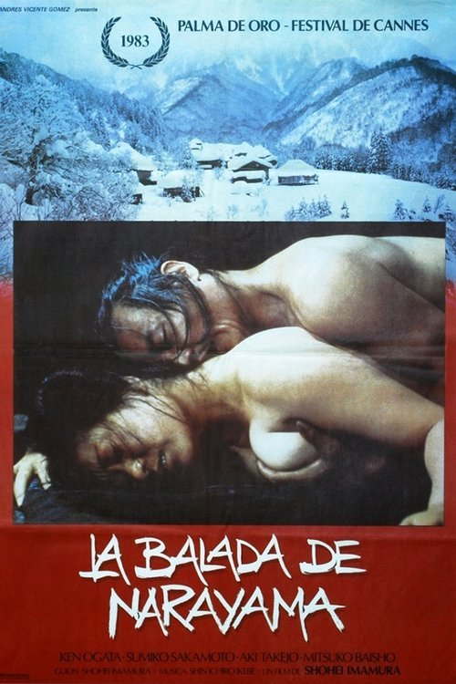

La balada de Narayama (1983)
Sinopsis Rápida
En un remoto y despiadado pueblo de montaña, una tradición ancestral obliga a los ancianos a ser abandonados para morir. ¿Puede una madre aceptar este destino para salvar a su familia?
Sinopsis Detallada
La Balada de Narayama cuenta la historia de una familia pobre y rural que debe enfrentarse a la dura costumbre de abandonar a sus mayores en la montaña sagrada cuando alcanzan los setenta años. La película sigue a Orin, una mujer que se enfrenta a la perspectiva de abandonar a su amado hijo. Es una poderosa exploración de la familia, el sacrificio, la muerte y la naturaleza humana, en medio de un paisaje desolador. La película se caracteriza por su impresionante fotografía y un ritmo pausado que intensifica el drama.
¿Por qué tenés que verla?
- Una historia conmovedora y brutalmente honesta sobre la vida y la muerte.
- Impresionante fotografía y dirección de Shohei Imamura que captura la belleza y la dureza del paisaje.
- Una película de culto que ha influenciado a numerosos cineastas y continúa siendo discutida por su impacto emocional.
- Representación de una tradición cultural extrema y sus consecuencias.
Idea Extra
Comparación de la tradición de Narayama con otros rituales culturales de sacrificio y abandono de ancianos a través de la historia.